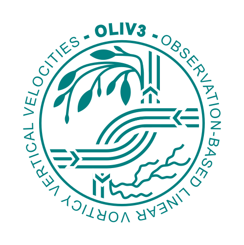
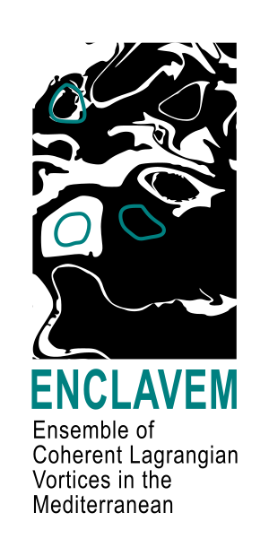

Project Gallery

OLIV3: Observation-Based LInear Vorticity Vertical Velocities Product
An observation-based dataset providing β-plane geostrophic vertical velocities using Linear Vorticity Balance.
Isopycnal level product Vertical level product

ENCLAVEMED: ENsamble of Coherent Lagrangian Vorticies in the MEDiterranean Sea
Altimetry-based Rotationally Coherent Lagrangian Vortex census over the Mediterranean Sea during the 1993-2022 period
View on ZenodoMediterranean Finite-Time Lagrangian Vorticity (FTLV)
FTLV fields using altimetry-based surface velocities developed in 4DMEDSEA project
MIOST - derived FTLV (1/24º) MIOST - derived FTLV (1/72º) 4DVARNET 1/20 - derived FTLV (1/24º) 4DVARNET 1/20 - derived FTLV (1/72º) 4DVARNET 1/8 - derived FTLV (1/24º) 4DVARNET 1/8 - derived FTLV (1/72º)Ekman Pumping from OCCITENS
Processing scripts to compute Ekman layer vertical velocities from the OCCITENS ocean model output.
View on GitHub